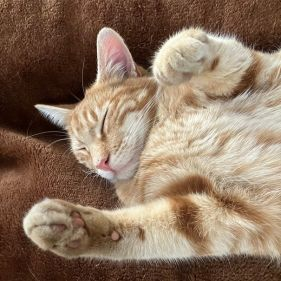

٦. إنشاء تطبيق صور القطط
ورشة عملفي هذه الورشة، سوف تتعلم كيفية العمل مع عناصر اتش.تي.إم.إل (HTML) الأساسية مثل العناوين (headings) والفقرات (paragraphs) والصور (images) والروابط (links) والقوائم (lists).
كود التطبيق (App) :
code<!DOCTYPE html> <html lang="ar" dir="rtl"> <head> <meta charset="UTF-8" /> <title>تطبيق صور القطط</title> </head> <body> <main> <h1>تطبيق صور القطط</h1> <section> <h2>صور القطط</h2> <!-- هذا تعليق لا يظهر على المتصفح --> <p> الجميع يحب <a href="https://arabiverse.github.io/HTMLverse/basic/assets/running-cats.jpg" target="_blank">القطط اللطيفة</a> على الانترنت! </p> <p> شاهد المزيد <a href="https://freecatphotoapp.com">صور القطط</a> في معرضنا. </p> <a href="https://freecatphotoapp.com"> <img src="https://arabiverse.github.io/HTMLverse/basic/assets/relaxing-cats.jpg" alt="قطة برتقالية لطيفة مستلقية على ظهرها"> </a> </section> <section> <h2>قوائم القطط</h2> <h3>الأشياء التي تحبها القطط:</h3> <ul> <li>عُشبة القطة</li> <li>مؤشرات الليزر</li> <li>لازانيا</li> </ul> <figure> <img src="https://arabiverse.github.io/HTMLverse/basic/assets/lasagna.jpg" alt="شريحة من اللازانيا على طبق."/> <figcaption>القطط <em> تحب </em> اللازانيا.</figcaption> </figure> <h3>أكثر 3 أشياء تكرهها القطط:</h3> <ol> <li>علاج البراغيث</li> <li>الرعد</li> <li>القطط أخرى</li> </ol> <figure> <img src="https://arabiverse.github.io/HTMLverse/basic/assets/cats.jpg" alt="قطتان صغيرتان مخططان نائمَتان معًا على الأريكة."/> <figcaption>القطط <strong> تكره </strong> القطط الأخرى.</figcaption> <figure> </section> </main> <footer> <p>لا حقوق التأليف والنشر - <a href="https://arabiverse.github.io/HTMLverse/"> عالم اتش.تي.إم.إل </a></p> </footer> </body> </html>
النتيجة :
تطبيق صور القطط
صور القطط
الجميع يحب القطط اللطيفة على الانترنت!
شاهد المزيد صور القطط في معرضنا.
قوائم القطط
الأشياء التي تحبها القطط:
- عُشبة القطة
- مؤشرات الليزر
- لازانيا

أكثر 3 أشياء تكرهها القطط:
- علاج البراغيث
- الرعد
- القطط أخرى